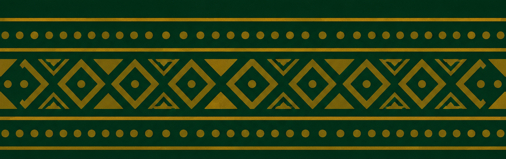

Voices of
Our Mothers
Preserving African maternal wisdom, oral histories, languages and cultural heritage through ethical AI.
Preserving African maternal wisdom, oral histories, languages and cultural heritage through ethical AI.
